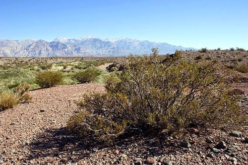
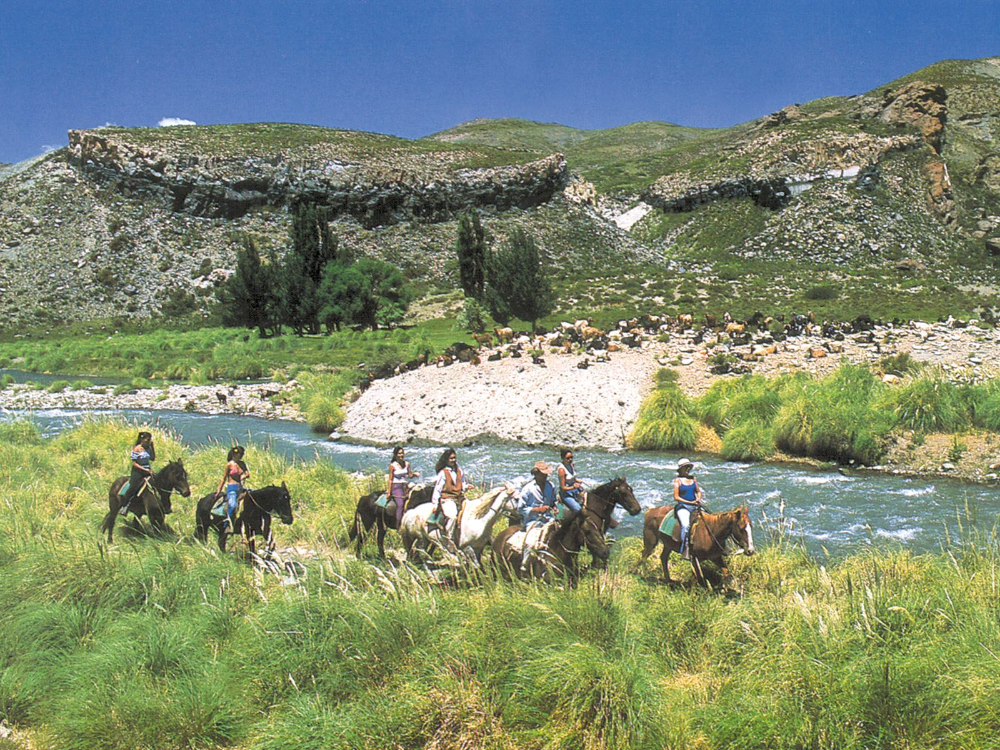
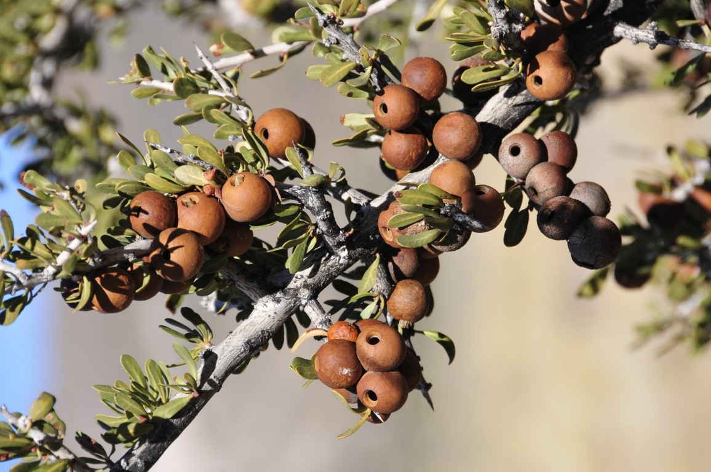

Especies típicas
- Jarilla
- Coirón
- Tolilla
- Alpataco
Jarilla
La jarilla es un arbusto típico de la región, resistente a la sequía y fundamental en el ecosistema mendocino.
Coirón

El coirón es un pasto duro y adaptado a los suelos áridos, muy común en la estepa patagónica y mendocina.
Cortadera
La cortadera es una planta de grandes penachos blancos, utilizada como ornamental y característica de la zona.
Molle
El molle es un árbol nativo que aporta sombra y alimento a la fauna local, muy valorado en la región.